The neighborhood had never seen such excitement—the annual Dazzling Dog Fashion Show was about to begin! Flyers announced a grand evening where the most stylish pooches would strut their paws down a glittering runway.
Neet had inspected three flyers. They all said the same thing, but he liked to be thorough when his future was involved.
At home, Heather fastened his custom-made outfit, a tiny royal blue tuxedo with a matching satin bow tie. She adjusted the fabric so his Dorito-shaped ears remained on full display.
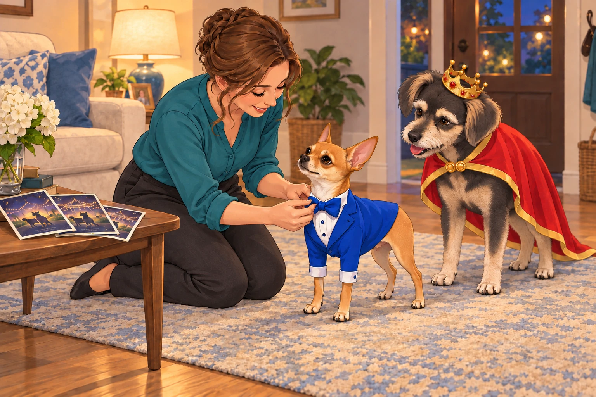
“Neet, you were born for this.”
Neet looked at himself in the mirror and smirked. “Obviously.”
He lifted one paw. The dog in the mirror did the same.
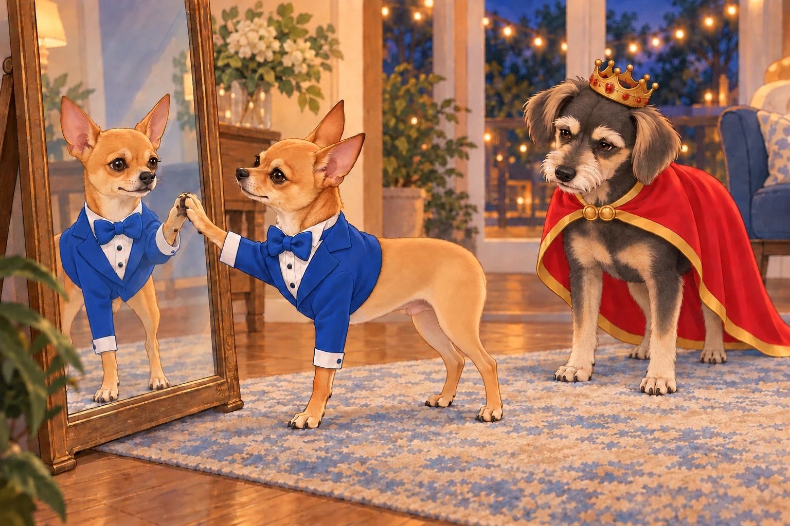
“Strong competition,” Buddy said from behind him.
Neet turned to reply, lost the reflection, and turned back immediately.
Buddy sat stiffly in a gold-trimmed cape, testing whether he could turn around without stepping on it. The matching crown slid over one brow.
“Do I have to wear this?” he whined, shaking his head so the crown wobbled.
Heather ruffled his ears. “You look like a king, Buddy. Own it.”
Buddy stood and took one careful step. The cape stayed where it belonged. He tried another.
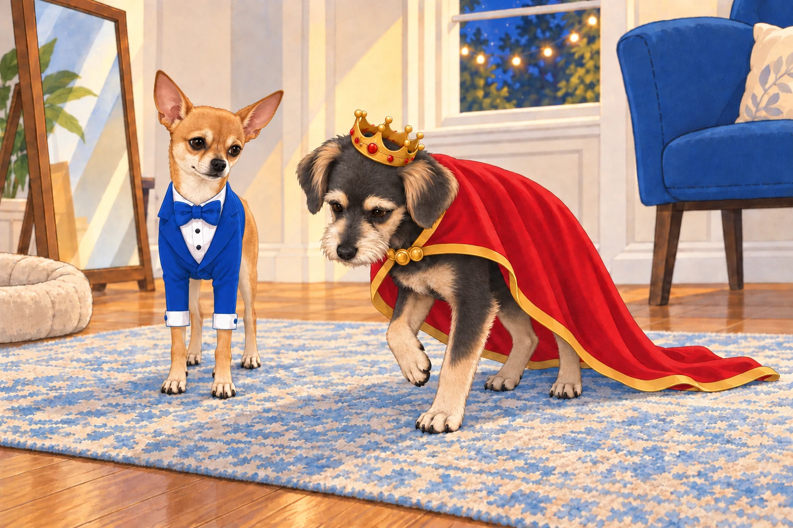
“Excellent,” Neet said. “Now look effortless.”
“I’m counting.”
Heather straightened the crown. “There. Now you can see what you’re ruling.”
Buddy could see the rug. He felt reasonably qualified to rule that.
Neet demonstrated a turn. He pivoted smartly, stopped, and presented the bow tie.
Buddy tried it. A hind paw landed on the edge of his own cape. He stopped before the fabric pulled tight.
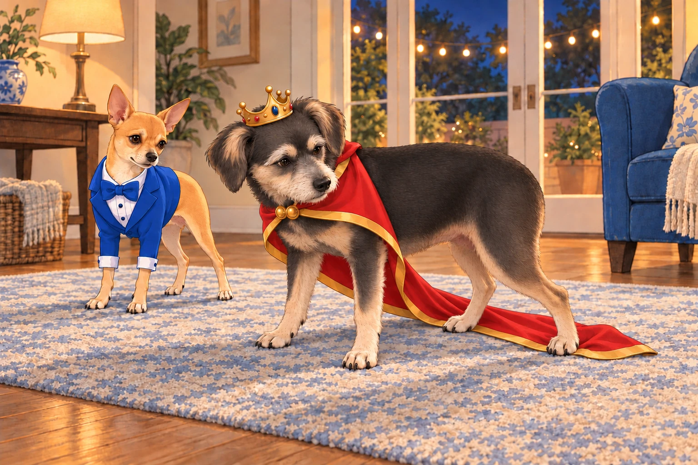
“The rug is rebelling,” he said.
Heather crouched beside him and freed the hem. She smoothed it behind his feet, then waited while he took a wider turn around her knee.
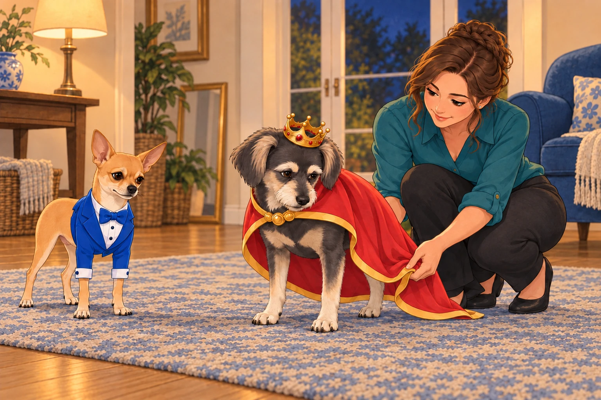
“That’s better, darling.”
Neet watched from the mirror.
“Very grand. A little slow.”
Buddy tried the wide turn again. “I’m going to arrive with everything attached.”
Heather laughed and packed the treat pouch. That seemed a sensible prize to Buddy, whatever the flyers promised.
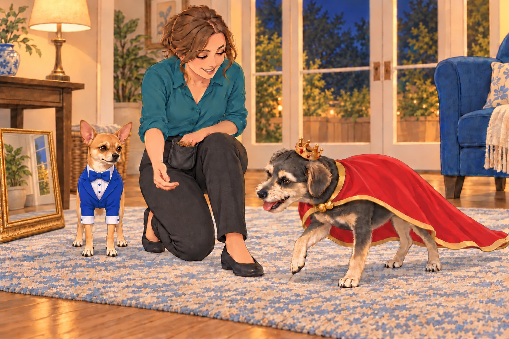
Before the Spotlight
At the park pavilion, fairy lights shone above a plush red carpet. Dogs crowded the waiting area in costumes that rustled, sparkled, and occasionally required their owners to walk sideways through the doorway.
Heather led Neet and Buddy past the audience to the waiting space behind the curtain. A volunteer showed her the enclosed runway and its side exit. She folded their walking leads into her bag and settled where both dogs could see her.
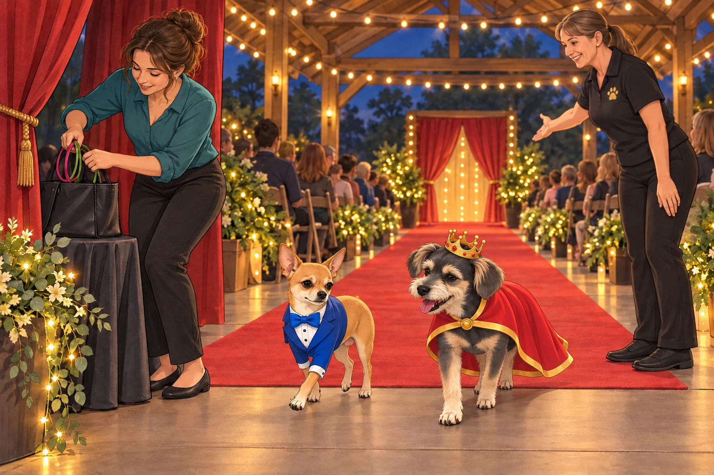
“Down to the end, then back to me,” she said, pointing.
Neet looked toward the end. People sat on both sides.
“Two audiences.”
“One audience,” Buddy said.
“Two good sides.”
Neet took his place beside the curtain. Buddy chose the space farther from the crowd, where he could arrange his cape without anyone mistaking the operation for his performance.
The host tapped the microphone.
Neet lifted his paw.
“That wasn't your name,” Buddy said.
“Preparation.”
Heather leaned down to straighten Neet’s bow tie. He kept his paw up through the adjustment.
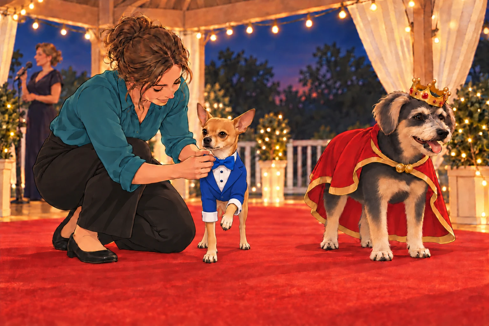
“You can relax for a minute.”
He put it down, reluctantly. Buddy noted that relaxing also required instruction.
The Competitors Take the Stage
First up was Lady Puddington, a regal Afghan Hound with flowing golden locks. She wore an elegant pearl necklace and a soft pink silk robe that trailed behind her like a royal gown. As she glided down the runway, the crowd gasped in admiration.
Neet rolled his eyes. “Too predictable.”
He moved half a step forward for a better look.
At the far end, Lady Puddington paused until the last fold of her robe settled. Then she turned. The audience applauded again.
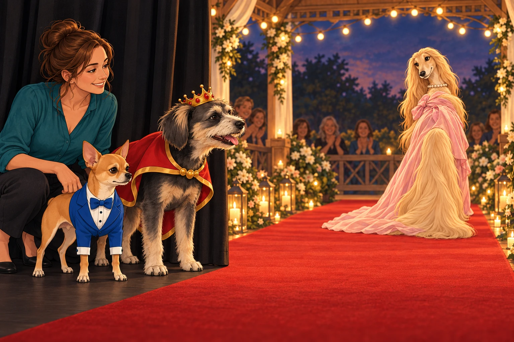
Neet watched closely.
“Predictably effective,” Buddy said.
Next, a French Bulldog named Pierre made his entrance, rocking a tiny leather jacket, stylish sunglasses, and a beret tilted at just the right angle. He gave a smug look before striking a dramatic pose.
“He looks like he belongs in a café in Paris,” Buddy said.
Neet narrowed his eyes, attempting the same expression without sunglasses.
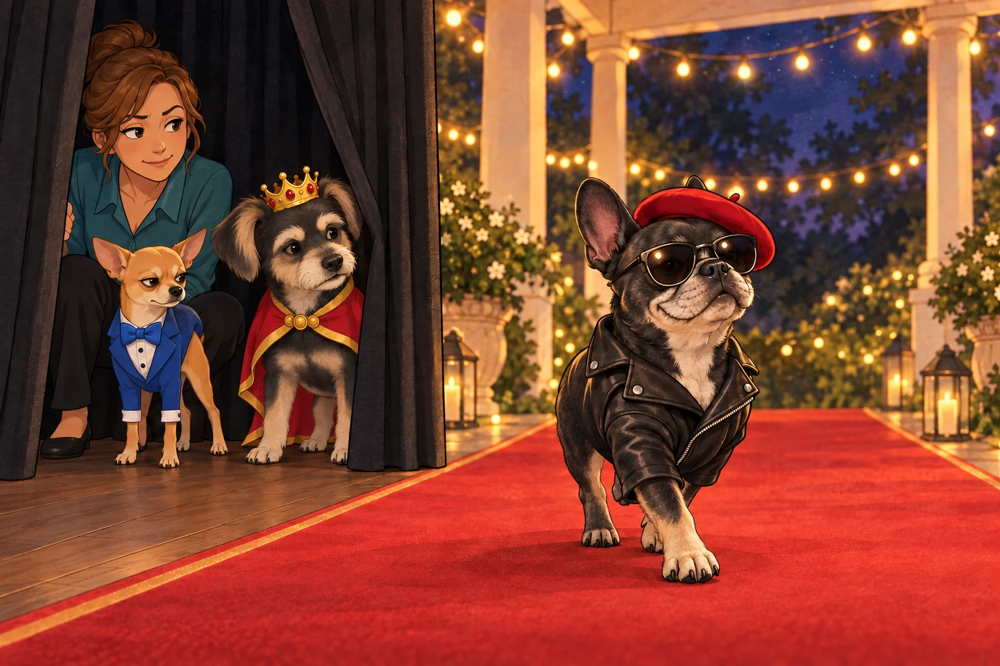
“Can you see?” Buddy asked.
“Enough.”
Pierre came back through the curtain. Neet opened his eyes before the French Bulldog noticed.
Then came Bruno the Bulldog, a stocky fellow in a shimmering gold tracksuit and diamond-studded collar. He gave the audience a slow, deliberate wink before strutting off-stage.
“Respect,” Neet said, nodding in approval.
He tried a wink. Both eyes closed.
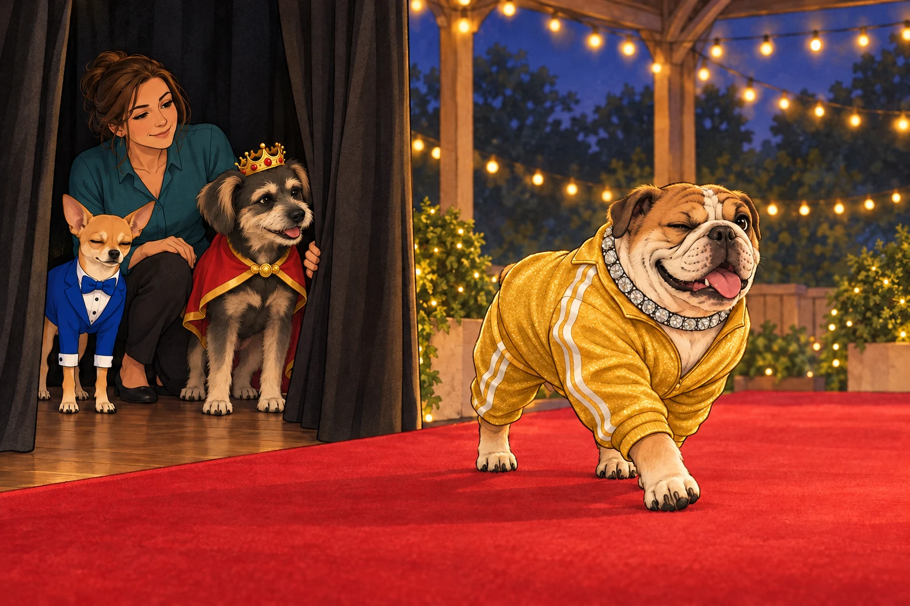
Buddy waited until they opened.
“Perhaps keep the paw.”
A Pomeranian named Trixie twirled onto the runway in a dazzling tutu made of rainbow-colored tulle. She spun on her tiny paws, glitter trailing behind her like fairy dust.
“She’s got flair,” Buddy admitted.
Heather watched with a delighted smile. Neet turned to see whether she was admiring him and discovered a serious administrative error.
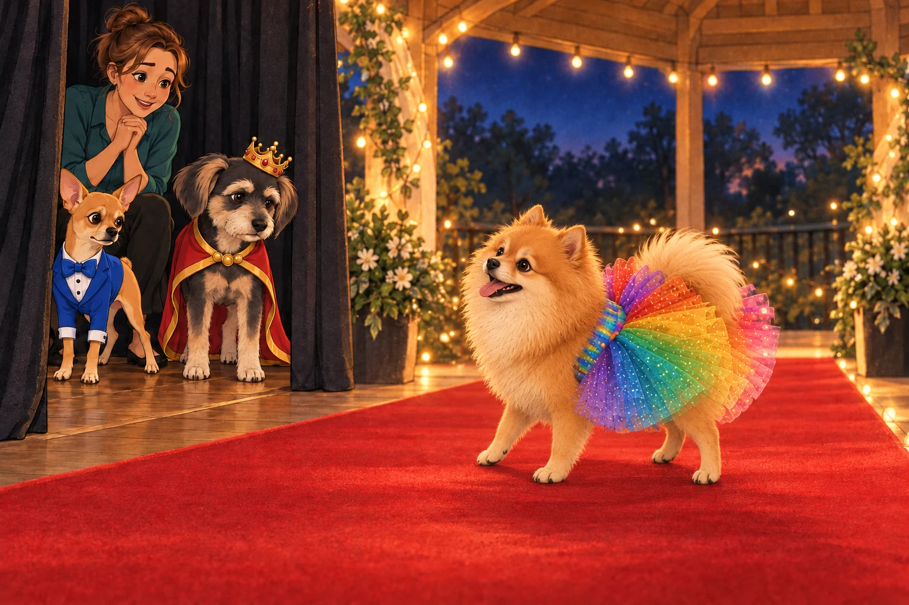
He tried a little twirl behind the curtain.
Buddy moved aside. His cape did not move quite as quickly.
Neet’s paw touched the hem. Buddy stopped; Neet stopped too, one foot unexpectedly occupied.
They looked down together.
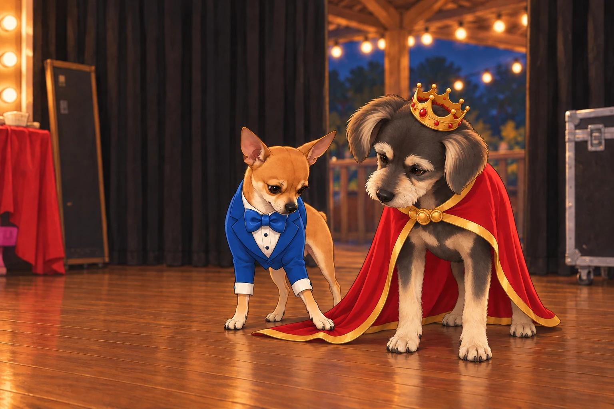
“I was testing something,” Neet said.
“My cape.”
Heather gently lifted the fabric clear.
“Your turn is coming, Neet.”
She ran her hand along Buddy’s shoulder before letting go of the hem. He took a cautious step forward, then another. Everything still worked.
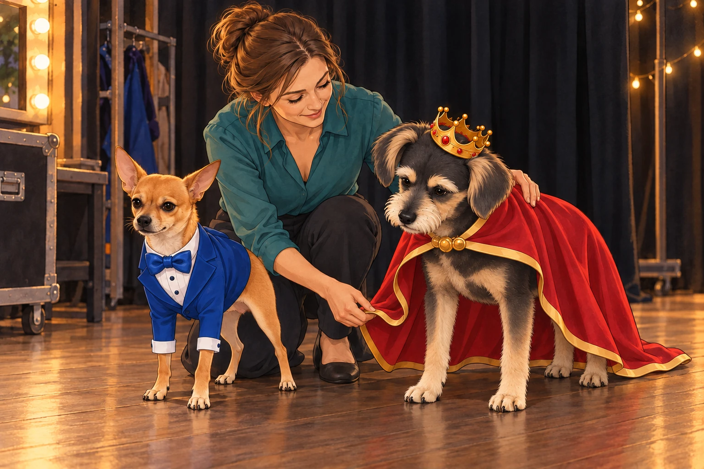
Neet glanced toward Trixie, who had finished without involving anyone else’s clothes.
“Paw,” he decided.
“Excellent choice.”
The crowd roared when Maximus, a massive Great Dane, made his appearance in a black cape with silver embroidery. His owner had styled his fur into sleek waves, making him look like a medieval knight on a grand quest.
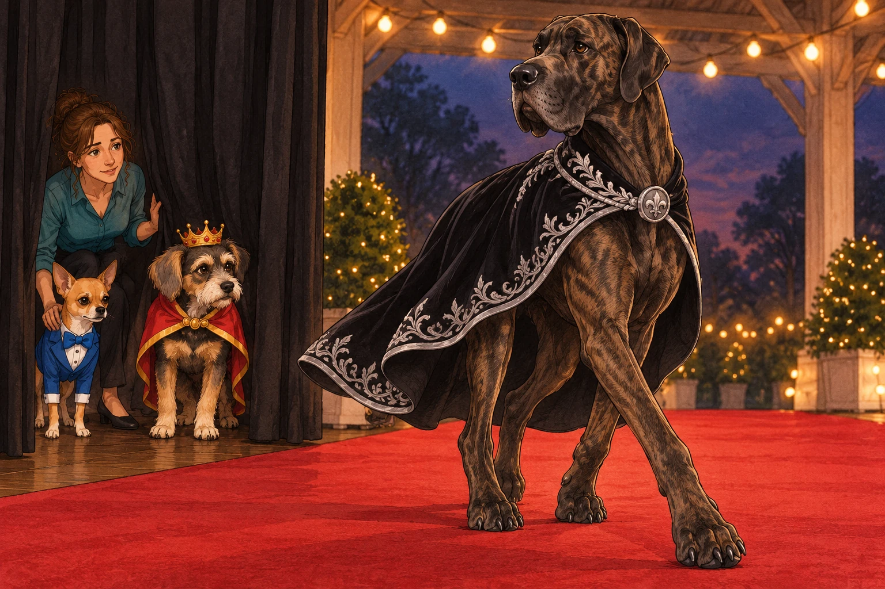
“I wouldn’t mess with that guy,” Neet muttered under his breath.
Buddy watched the Great Dane turn without treading on his cape. At last, something useful. He tried the same wide turn behind the curtain.
Neet glanced over. “Are you rehearsing?”
“No. I’m arranging my feet.”
Maximus returned with his cape sweeping neatly behind him. Buddy stepped closer.
“How do you keep it there?”
“Walk forward.”
“And turning?”
“More forward. In a different direction.”
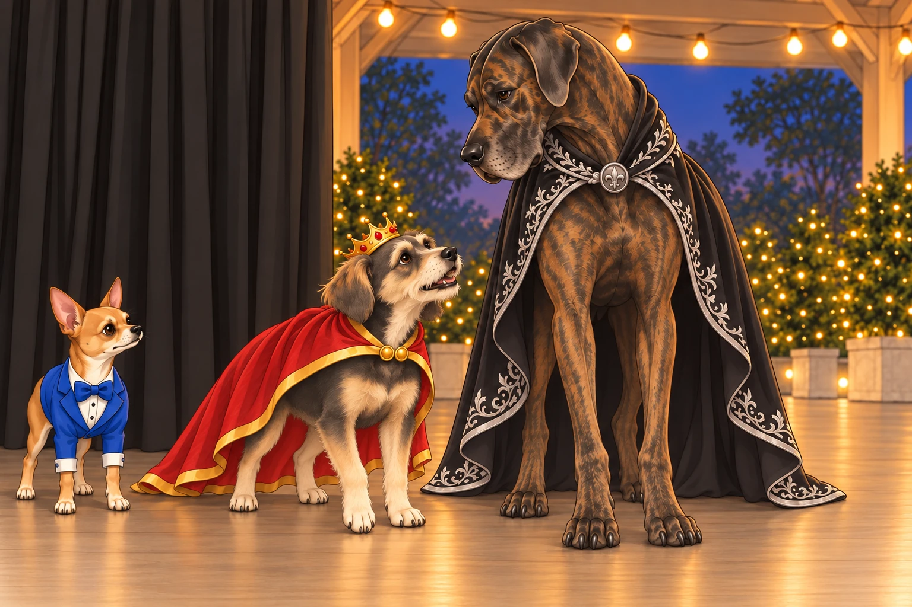
Buddy considered this, then walked a small curve around Neet.
His cape followed.
Neet turned with him, assuming he was being inspected.
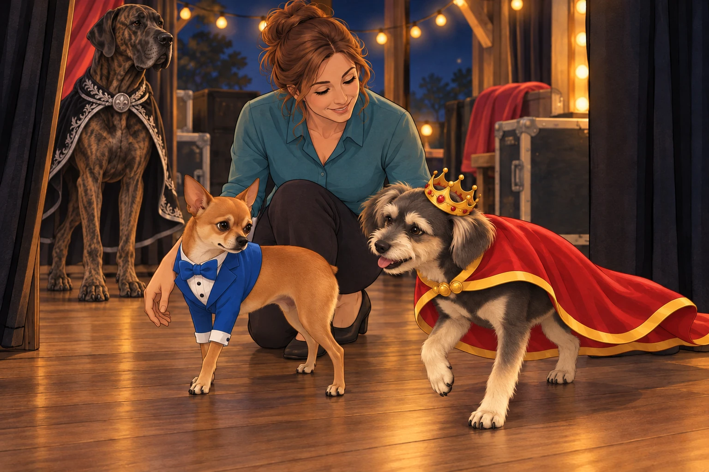
“Better from this side?”
Buddy finished his curve. “Much better from outside my clothes.”
Heather opened her camera and knelt beside them.
“You don't have to do what everybody else does,” she said softly. “I'd like to see my boys.”
Buddy leaned his head into her hand. Neet stood still while she touched his cheek, which was remarkably pleasant even without applause.
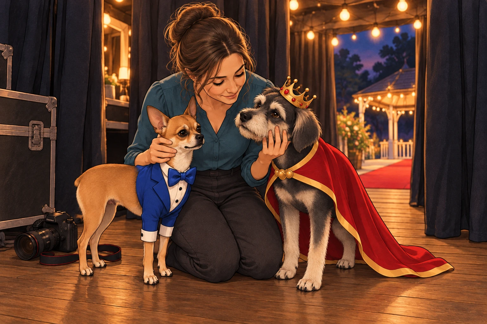
The host called their names.
Neet lifted his paw.
“Walking first,” Buddy reminded him.
Neet and Buddy’s Grand Entrance
Neet strutted onto the stage with his signature confidence, his tiny tuxedo gleaming under the spotlights. He stopped at the center, turned to the audience, and struck a pose—one paw raised, tail curled dramatically, his eyes practically sparkling.
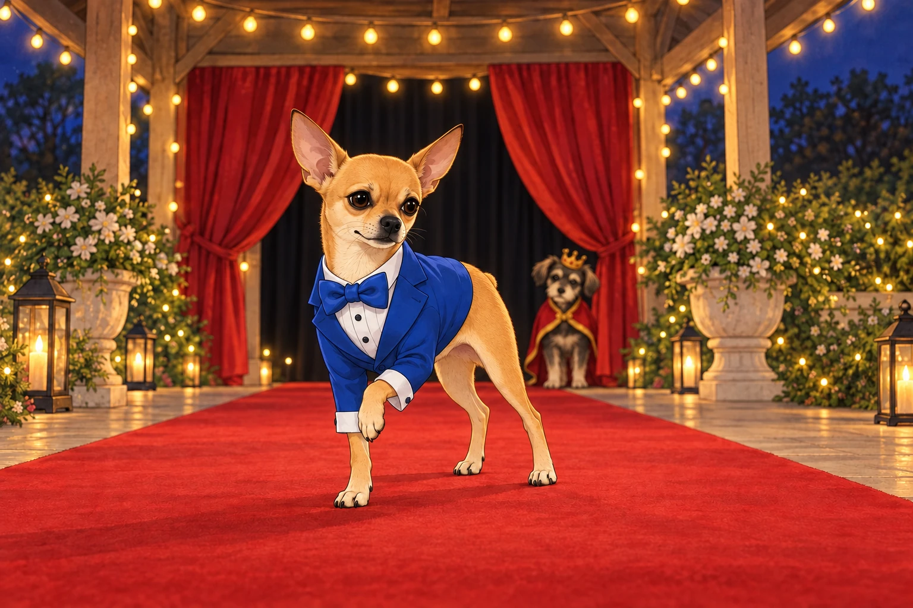
The audience ate it up. Neet lowered his paw and continued toward the far end.
Behind the curtain, Buddy heard the applause and glanced at Heather. She smiled and pointed along the runway, then moved around its outside edge to wait by the side exit, camera ready.
He chose a slow walk so the cape would stay behind his feet.
The lights were brighter out here. The carpet felt different from the rug. For the first few steps, he checked each paw as it landed.
Halfway along, he realized the crowd was watching quietly.
No one was laughing at the counting. A child near the front leaned forward with both hands beneath her chin.
Buddy lifted his head.
The crown stayed put.
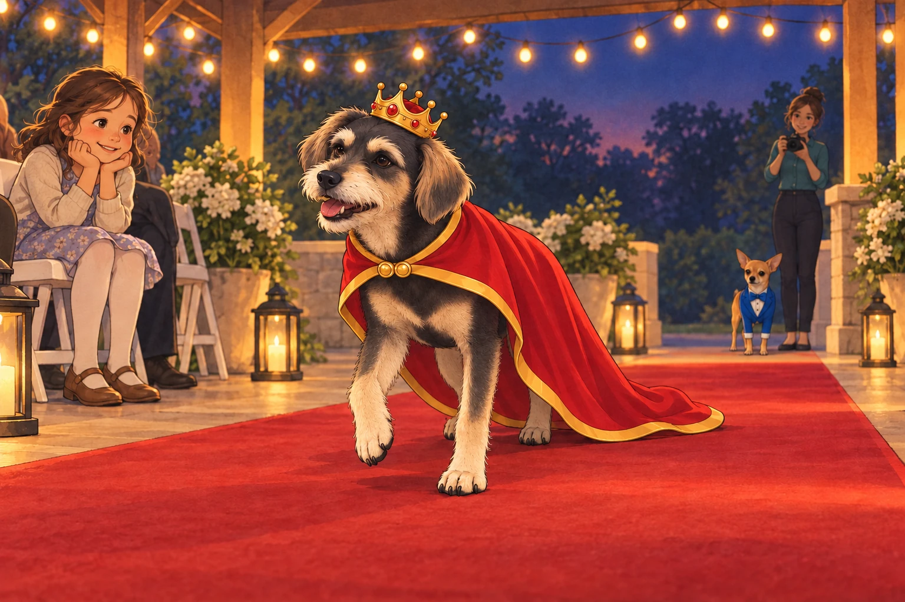
So did his feet.
At the far end, Neet held his pose a moment longer, then turned toward the side exit where Heather waited. A camera clicked from the other side.
Neet looked back at it.
He began to turn back too, directly across Buddy’s approaching path.
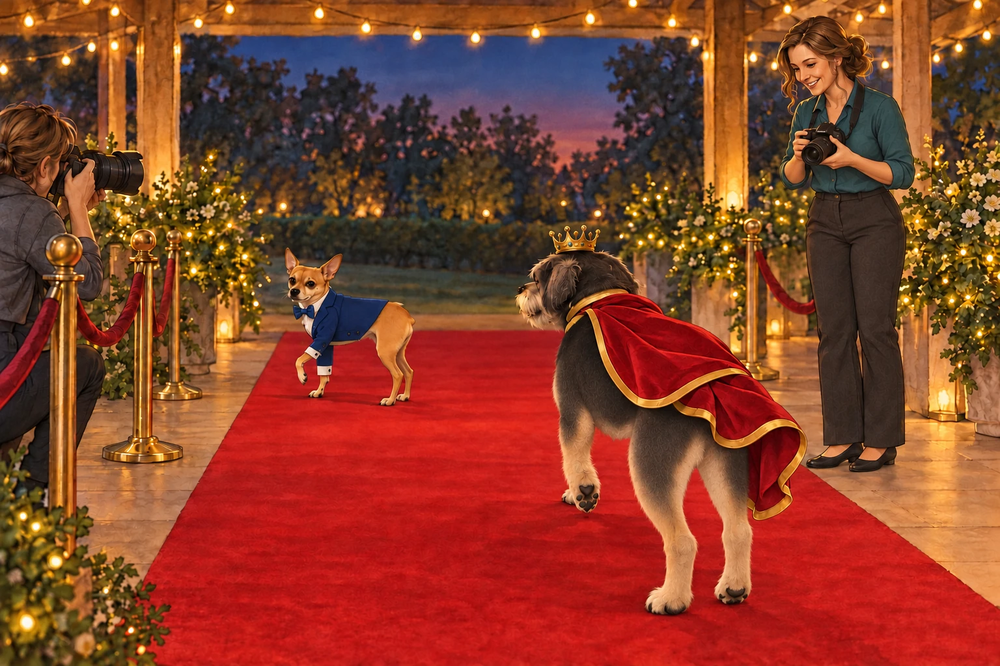
Buddy slowed. He could stop and let his cape bunch beneath him, or keep moving around Neet.
He chose the curve.
“This way,” he murmured.
Neet looked down at the gold-trimmed fabric, remembered his occupied foot, and stepped forward with him.
They turned together. Buddy’s cape swept behind them. Neet’s bow tie remained pointed at the audience.
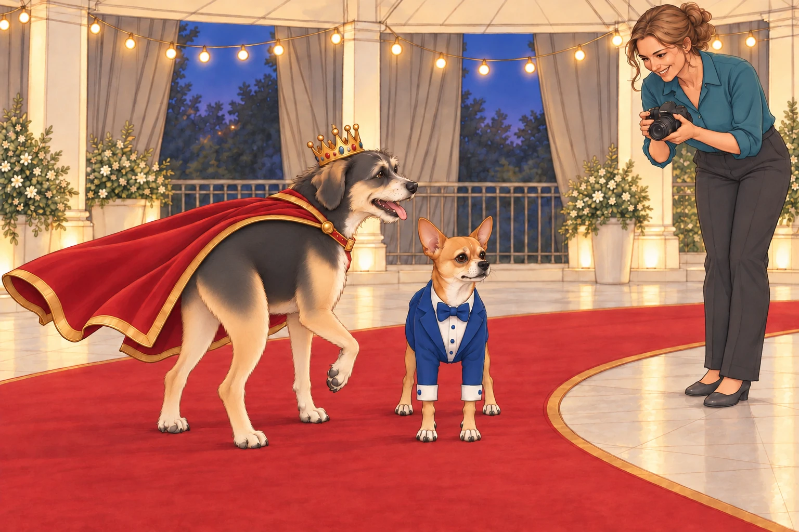
The applause began again.
Neet saw an opportunity. He drew up beside Buddy and whispered, “Lift your paw slightly—trust me.”
Buddy planted his other feet before lifting a paw. Neet held his pose beside him. The applause grew while Buddy was still deciding what to do with the paw, so he left it there.
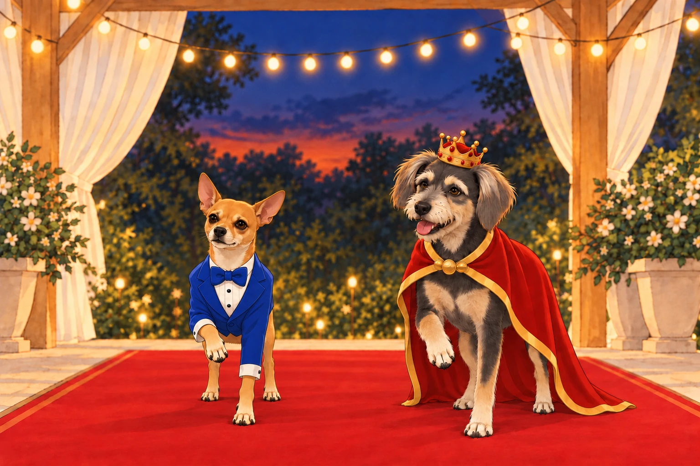
A judge, an elderly woman in a sequined blazer, nodded approvingly.
“Magnificent,” she whispered.
“Can I put it down now?” Buddy murmured.
“Not while they're clapping.”
Buddy looked at the audience. Several people began clapping harder.
He had successfully managed the cape, the crown, and the turn. He had not prepared for people applauding a foot into captivity.
Heather lowered her camera.
“You can put your foot down, darling.”
Buddy did. Neet waited a fraction longer.
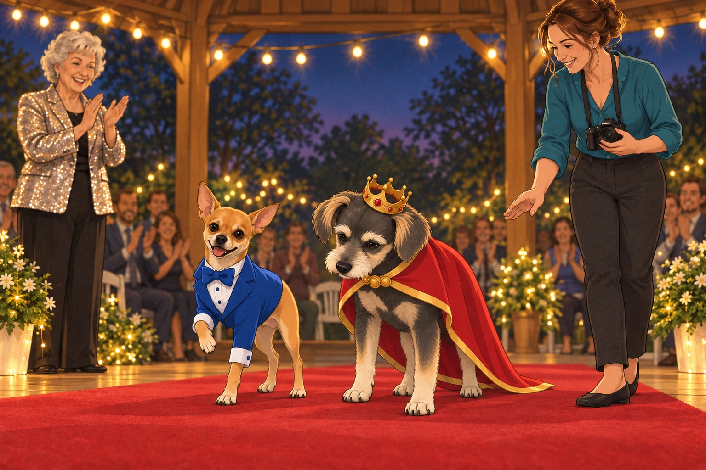
Then Buddy walked toward Heather, with Neet beside him. This time Neet let the cameras remain behind them.
Heather hugged them in turn and checked beneath the cape.
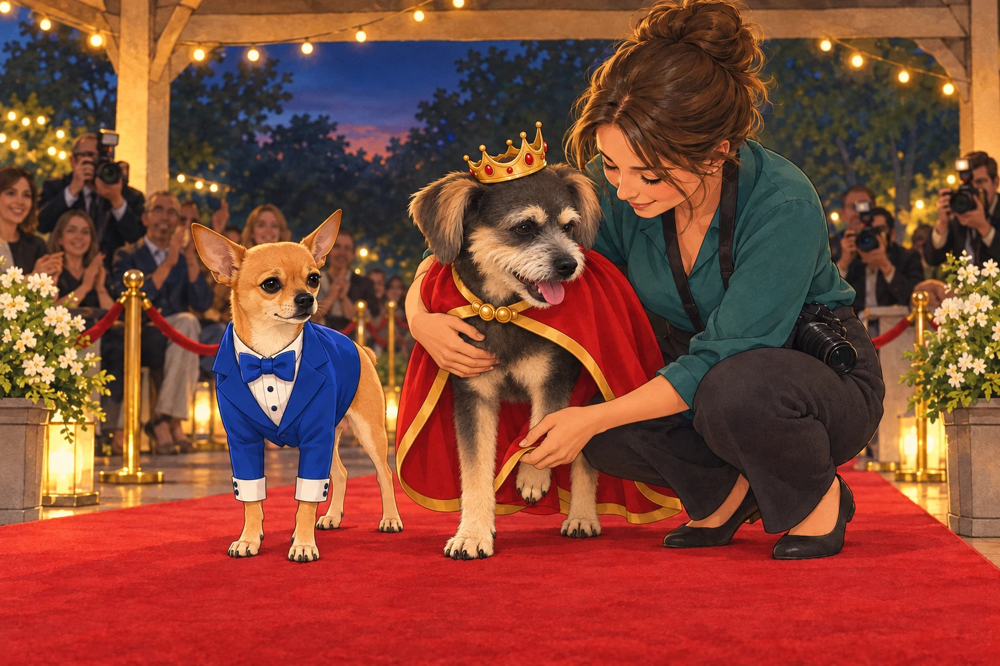
“All paws accounted for.”
“I've been doing that all evening,” Buddy said.
The Results
After all the contestants had walked, the judges deliberated. Neet watched the table as though concentration might help with the paperwork.
Buddy sat beside Heather, cape laid behind him. Maximus passed on his way to his owner.
“Good turn,” the Great Dane said.
Buddy lifted his head.
“Thank you.”
Neet glanced between them.
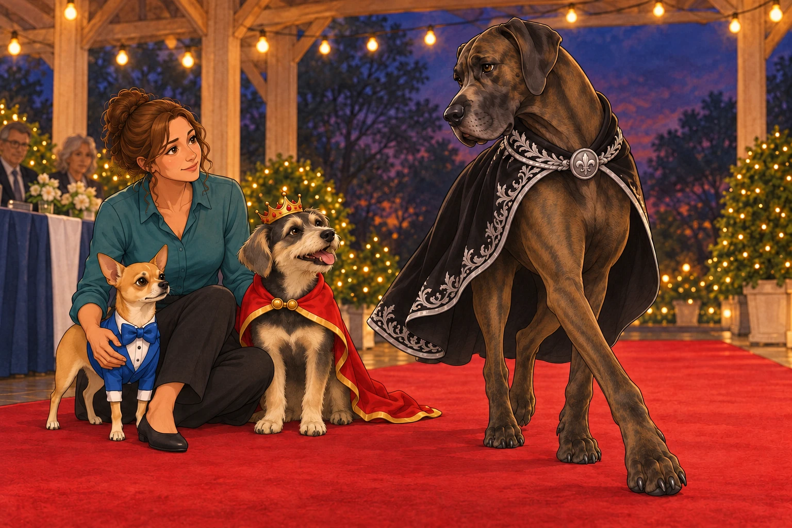
“I was in that turn.”
“Yes,” Buddy said. “I went around you.”
The host took the stage, microphone in hand. The crowd held its breath.
“The winner of this year’s Dazzling Dog Fashion Show is…Neet and Buddy!”
For a moment, Buddy looked at Neet to check that his name had been included.
Neet was already bowing.
The crowd erupted in cheers. Heather laughed, kissed Buddy’s head, and lifted him onto the winner’s podium. She helped Neet up beside him, leaving room for the cape.
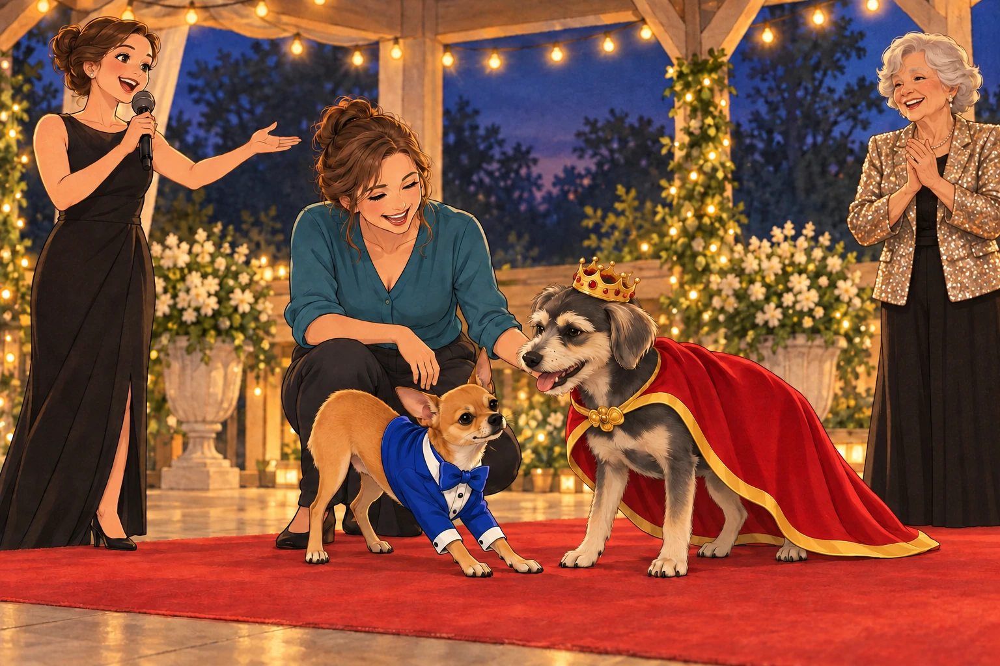
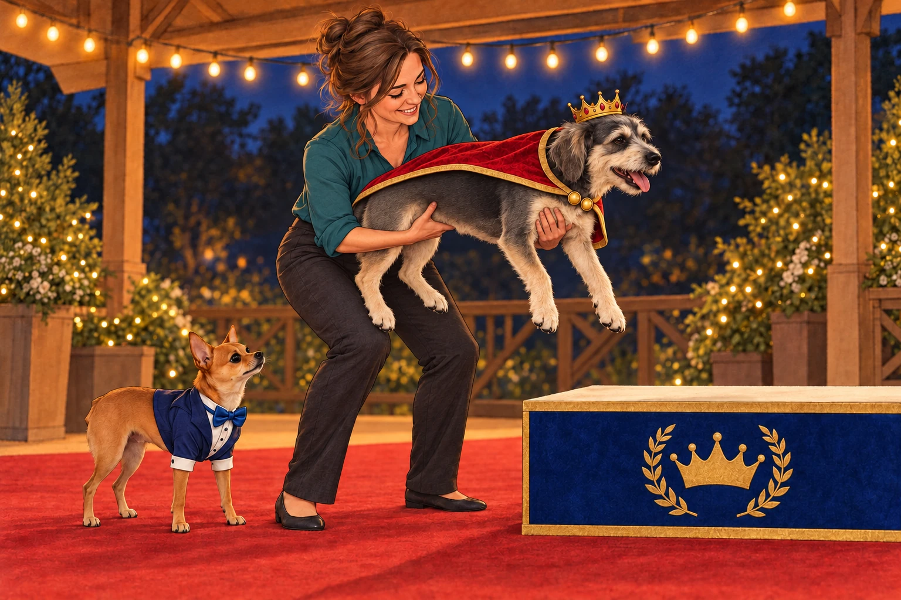
A giant golden bone trophy was placed in front of them. Photographers snapped away.
Buddy leaned toward the bone and sniffed. Nothing.
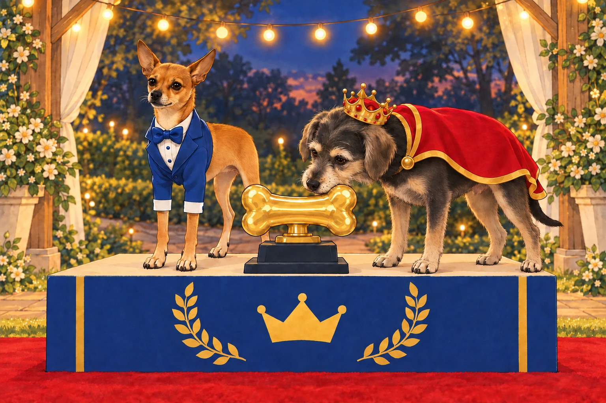
He tried the other end. Still nothing.
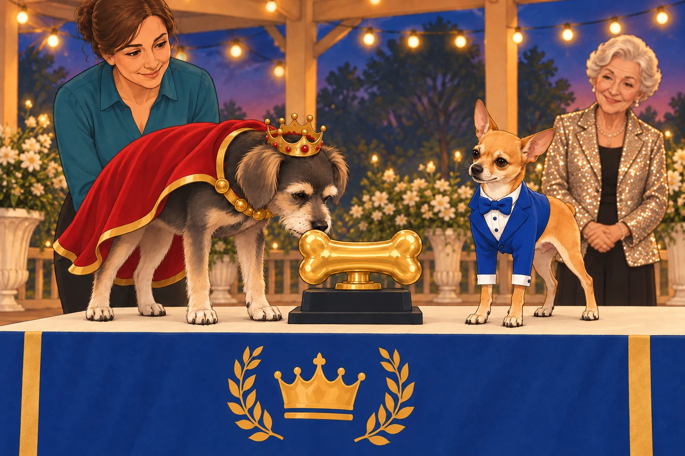
Neet whispered, “See? Told you we'd steal the show.”
Buddy chuckled. “Okay, okay, you were right.” He looked back at the trophy. “They've made a bone you can't eat.”
Heather caught his hopeful glance and opened the treat pouch.
Both fashion icons immediately forgot the photographers.
The judge in the sequined blazer laughed as Heather gave each dog a treat.
“There they are.”
Lady Puddington swept past with her owner and offered a gracious nod. Trixie bounced beside them, still enjoying her skirt. Neet nodded back with his mouth full, which made looking effortless considerably more difficult.
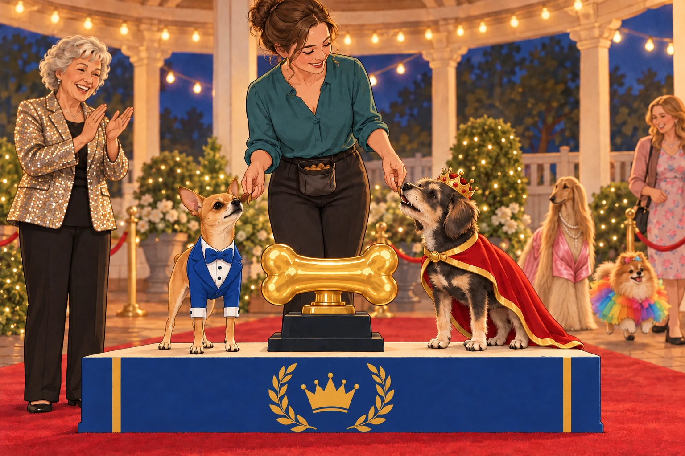
As they left the event, Neet strutted confidently while Buddy beamed with pride. Heather grinned, ruffling both their heads.
“Who knew you two would become fashion icons?”
Neet smirked. “This is only the beginning.”
Heather removed Buddy’s cape before clipping on their walking leads. He gave one delighted little hop, stopped, and checked behind him out of habit.
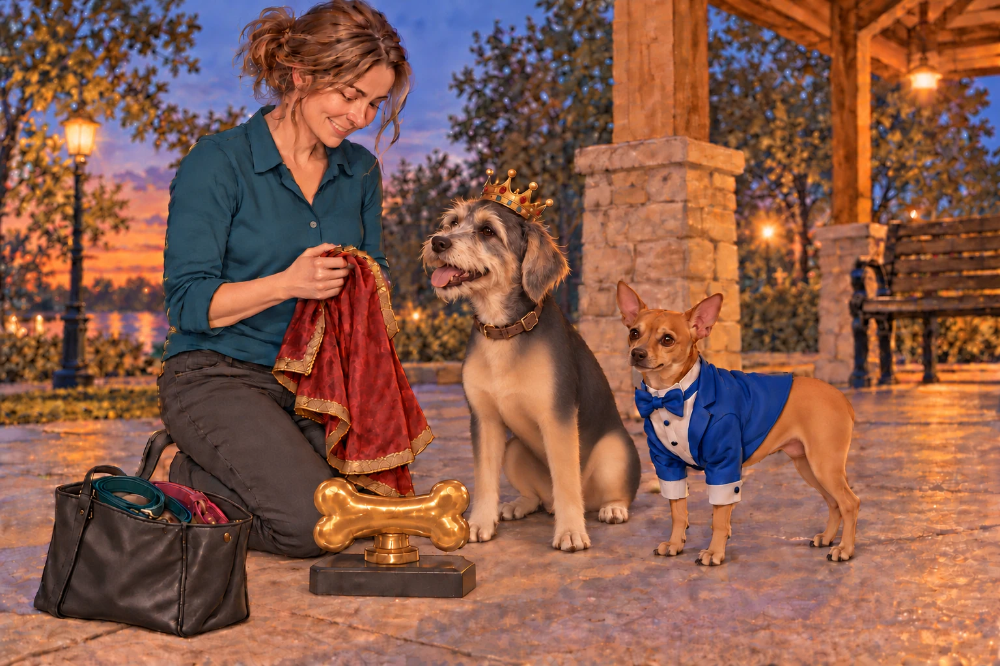
Nothing followed.
Heather carried the trophy home. Buddy carried his crown until the pavement became interesting, then let her carry that too. Neet kept the bow tie on.
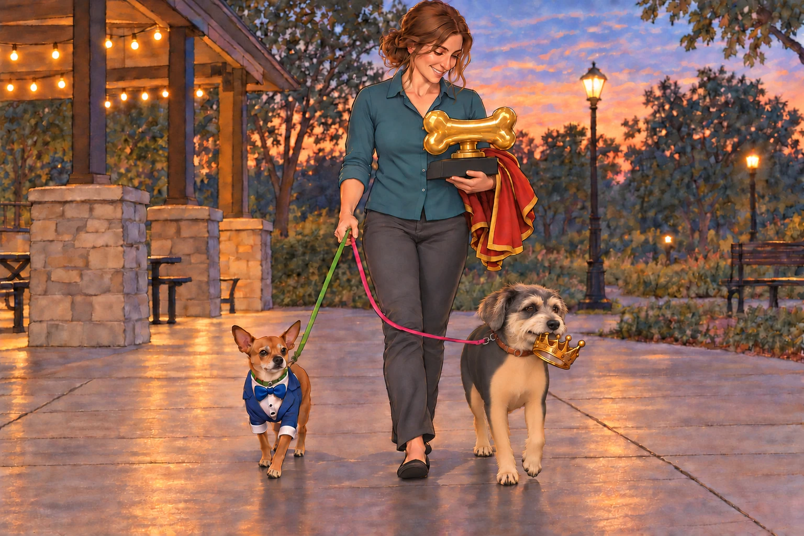
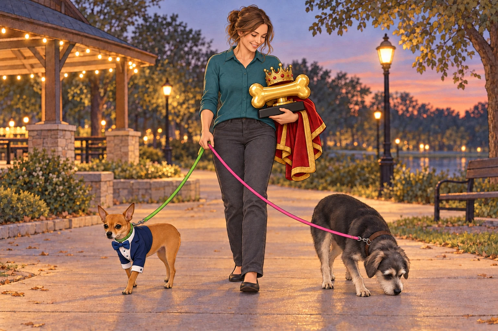